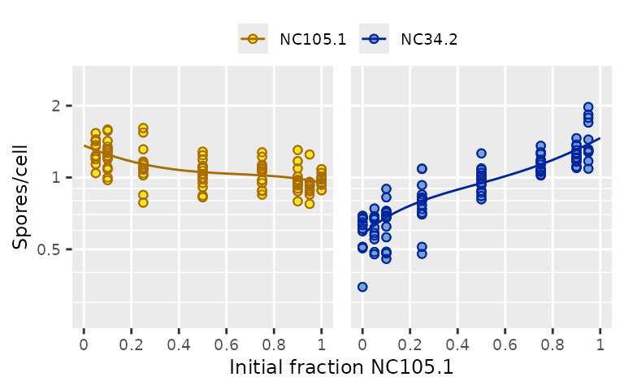

It can be very useful to analyze how microbial interactions affect the absolute fitness of each strain. Strains may react differently to mixing, for example (smith & Inglis 2021). But plotting strain fitness and fitting models to it can be a little tricky.
Plotting strain fitness
Total fitness and the relative ratio of strain fitnesses are fundamentally different quantities from each other, so they need their own plots and their own fitted models. But the fitness of one strain is the same kind of quantity as the fitness of another strain. They can be plotted on the same axis.
Let’s look at a dataset included in microbimixr where different natural isolates of Dictyostelium amoebae were starved, mixed, and allowed to form fruiting bodies together (Madgwick et al. 2018).
library(microbimixr)
fitness_dicty <-
data_Madgwick_2018 |>
calculate_mix_fitness(var_names = c(
initial_number_total = "input_cells_total",
initial_fraction_A = "input_freq_i",
final_number_total = "spores_total",
final_fraction_A = "output_freq_i",
name_A = "strain_i",
name_B = "strain_j"
))Here fitness is measuring cells that survived as spores instead of dying and becoming part of the fruiting body’s stalk. There are a bunch of different strain pairs in the dataset. Let’s focus on one of them:
fitness_pair <- subset(fitness_dicty, name_A == "NC105.1" & name_B == "NC34.2")
plot_mix_fitness(fitness_pair, mix_scale = "fraction")
The strain-fitness plot shows that both strains make more spores when they’re rare (because they contribute fewer cells to the stalk). That result isn’t visible in the plots of total fitness or fitness ratio. The fitness ratio plot shows that sporulation is negatively frequency-dependent, but it doesn’t show how much each strain contributes to that.
Strain fitness plots are often crowded, so it can be useful to use
the facet_strains argument:
fig_strain_fitness <-
plot_strain_fitness(fitness_pair, ylab = "Spores/cell", facet_strains = TRUE)
fig_strain_fitness
Behind the scenes, plot_strain_fitness() converts
fitness data from wide format (where each row has data for both strains)
to long format (where each strain has its own row). With long-format
data we can plot both strains on the same fitness axis and
strain can be mapped to point color or used as a facetting
variable.
Models of strain fitness
When you make figures to show your data in papers and talks, it’s a good idea to also plot the models you use to analyze the data. This helps your audience understand how the models explain the data. It also helps you make sure the model is doing what you want it to!
Wide-format models
One approach is to use models that predict wide-format fitness. This could be a set of differential equations describing what happens to each strain between the initial and final states of the mix experiment (Yurtsev et al. 2013). Or it could just be descriptive statistical models fit separately to each strain:
model_A <- lm(fitness_A ~ poly(initial_fraction_A, 3), data = fitness_pair)
model_B <- update(model_A, fitness_B ~ poly(initial_fraction_A, 3))To show the predicted fitness values as smooth curves, make a new data frame for them with a range of intermediate mixing frequencies. Here we’ll do that using dplyr, which can make data-wrangling easier to read:
library(dplyr)
fitted_wide <- data.frame(initial_fraction_A = seq(0, 1, by = 0.02))
fitted_wide <- fitted_wide |>
mutate(
fitness_A = predict(model_A, newdata = fitted_wide),
fitness_B = predict(model_B, newdata = fitted_wide),
name_A = "NC105.1",
name_B = "NC34.2"
)To plot the fitted model we need to need to convert its predicted
values to long format. You could do that yourself using
reshape() in base R or tidyr::pivot_longer(),
but microbimixr includes lengthen_strain_fitness() to make
it easy. Then add it to the figure as a line using ggplot2:
library(ggplot2)
fig_strain_fitness +
geom_line(data = lengthen_strain_fitness(fitted_wide), na.rm = TRUE)
Long-format models
Another approach is to fit a single model where fitness is a function of two variables: strain and mixing frequency. This is analogous to the “neighbor-modulated fitness” formulation of kin selection (Taylor & Frank 1996). For these you fit the model to long-format data:
model_long <- lm(
fitness ~ strain * poly(initial_fraction_A, 3),
data = lengthen_strain_fitness(fitness_pair)
)Then make a long-format data frame for the fitted model’s predicted values:
fitted_long <- expand.grid(
initial_fraction_A = seq(0, 1, by = 0.02),
strain = c("NC105.1", "NC34.2")
)
fitted_long$fitness <- predict(model_long, newdata = fitted_long)And add it to the plotted figure:
fig_strain_fitness + geom_line(data = fitted_long, na.rm = TRUE)
References
Madgwick PG, Stewart B, Belcher LJ, Thompson CRL, and Wolf JB (2018) Strategic investment explains patterns of cooperation and cheating in a microbe. PNAS 115: E4823-E4832. https://doi.org/10.1073/pnas.1716087115
smith j and Inglis RF (2021) Evaluating kin and group selection as tools for quantitative analysis of microbial data. Proceedings B 288: 20201657. https://doi.org/10.1098/rspb.2020.1657
Taylor PD and Frank SA (1996) How to make a kin selection model. Journal of Theoretical Biology 180: 27-37. https://doi.org/10.1006/jtbi.1996.0075
Yurtsev EA, Chao HX, Datta MS, Artemova T, and Gore J (2013) Bacterial cheating drives the population dynamics of cooperative antibiotic resistance plasmids. Molecular Systems Biology 9: 683. https://doi.org/10.1038/msb.2013.39